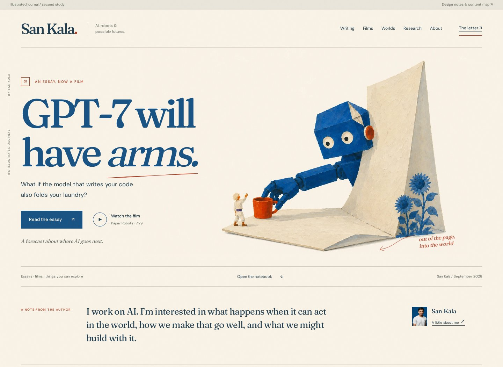

A journal with
a world of its own.
The original direction’s paper, cobalt, and warmth, developed into an illustrated publication with a complete content structure.
San’s feedback: retain direction one, account for the rest of the existing site, publish substantial content on Substack itself, and make the design feel authored. This is a working proposal, not a deployed replacement or an award claim.
What makes it more personal
-
A cover made for this essay: the Paper Robots
character reaches out from a folded page into the physical world.
The exact prompt, original PNG, and display WebP are in
assets/cover/. - An idea you can inspect: change the number of bodies connected to one model. This is a labeled conceptual illustration, not measured robotics capability.
- A world you can look around: tilt the view inside Another Sky using 33 frames from the actual rendered explorer.
- A complete notebook: search and filter the eight existing pieces and publications. The complete StartR post-mortem demonstrates the new reading treatment.
- The person behind the pictures: the real UIST photo, research work, all ten original milestones, education, honors, and CV links are part of the design.


Where everything goes
The homepage selects a starting point. The archive and interior pages keep the breadth of the existing site within one or two clicks.
| Existing content | In this design | What happens to the live URL |
|---|---|---|
| GPT-7 essay & film | Cover, Writing, and Films | Existing essay URL and YouTube link stay intact |
| EAI Challenge write-up | Notebook and Research | /notes/eai-challenge stays intact |
| StartR post-mortem | Notebook, full reading page, About timeline | /notes/startr-postmortem stays intact |
| Another Sky, bee simulation, Dyson swarm | Worlds and the complete notebook | All three interactive URLs stay intact |
| Three research publications | Research, with paper/project links | External source links and CV stay intact |
| All ten news & career milestones | About, in an expandable timeline | Original homepage anchors get an implementation mapping |
| Education, honors, work details, PDF | Research & About, with the full CV linked | /resume and the PDF stay intact |
| Lab index | Published interactives are under Worlds |
/lab remains valid; it currently has no published
entries
|
| Portrait, research photos, contact & profiles | Author context, About, Research, footer | Existing public assets and profile links stay intact |
The catalogue is generated from src/data/site-content.js,
plus the two research projects not already represented there. No
production route or source page was removed. The older page’s UIST
photograph was mislabeled as an EAI presentation; this design uses it
only for the actual UIST project.
Substack should have the essays, too.
Revised recommendation: publish complete, free reading editions on Substack. Readers should be able to finish the argument there, watch the film, share a passage, restack the post, and join a discussion. The site holds the rich edition: interactive figures, experiments, sources, and the rest of the author’s work.
Substack’s own explanation of its feed says it uses interests, subscriptions, follows, audience overlap, and activity inside Substack to find relevant work. Publishing native posts gives readers something to engage with there. That is a reason to participate; it does not establish a guaranteed ranking boost for full text.
- Keep one master manuscript in this repo.
- Publish the complete reading edition on Substack, with images, sources, and the film.
- Keep the site edition at its existing URL; link to it for interactive figures or additional material.
- Share a few good standalone observations or scenes through Notes and X, leading to the relevant edition.
- When correcting the argument, update both editions from the master and keep the original publication date visible.
This supersedes the first study’s adapted-letter default. Substack is still proposed and entirely free; no account, publication address, subscriber form, paid plan, or sending action is connected.
My design recommendation
Use the author’s journal as the main site, and let Paper Robots supply the visual world. Keep the most expressive artwork on covers and chapter openings; give reading pages and research records quieter layouts. Build two or three memorable interactions around real ideas and projects.
The wider content matters: the chip-design history, the contest work, the bee simulation, and the startup that didn’t work out make this your site. They should remain part of the story.
The prototype retains native scrolling, supports keyboard controls and reduced motion, and has no heavy 3D engine, autoplaying video, or artificial audience metrics. The cover uses a small pointer-driven perspective shift. The world control uses actual rendered frames.